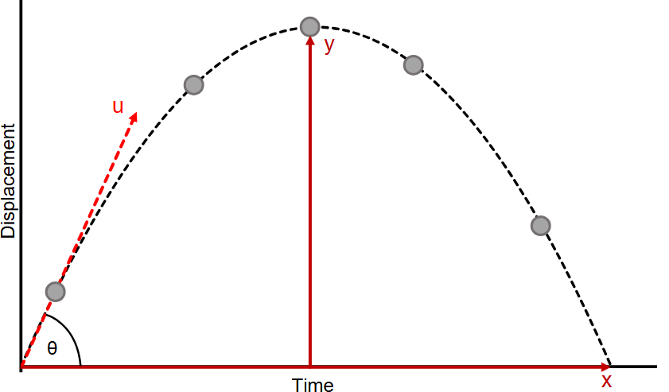
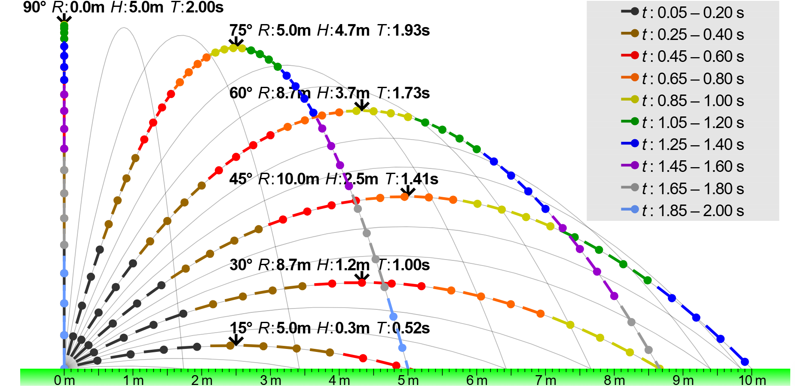

Problem 1
Investigating the Range as a Function of the Angle of Projection
Theoretical Foundation
Projectile motion follows Newton’s second law of motion:
For a projectile launched at an initial velocity $ v_0 $ and angle $ \theta $, the motion can be decomposed into horizontal and vertical components:
-
Horizontal motion :
$$ x(t) = v_0 \cos(\theta) t $$ -
Vertical motion :
$$ y(t) = v_0 \sin(\theta) t - \frac{1}{2} g t^2 $$
 Projectile Motion Diagram
To find the time of flight $ T $, we solve for when the projectile returns to the ground $ y(T) = 0 $:
The range ($ R $) is given by:
Substituting $ T $:

This shows that the range depends on the sine of twice the launch angle.
Range Analysis
Below is a Python script to analyze the dependency of range on the angle:
import numpy as np
import matplotlib.pyplot as plt
def projectile_range(v0, g):
angles = np.linspace(0, 90, 100) # Angles from 0° to 90°
ranges = (v0**2 * np.sin(2 * np.radians(angles))) / g
plt.figure(figsize=(8, 5))
plt.plot(angles, ranges, label=f'Initial Velocity = {v0} m/s')
plt.xlabel("Launch Angle (degrees)")
plt.ylabel("Range (m)")
plt.title("Projectile Range vs Launch Angle")
plt.legend()
plt.grid()
plt.show()
# Example: Initial velocity = 20 m/s, g = 9.81 m/s²
projectile_range(20, 9.81)
Observations: - The maximum range is achieved at 45°. - For angles greater than 45°, the range decreases symmetrically.
Practical Applications
- Sports: Soccer, basketball, and javelin throw rely on optimal launch angles.
Basketball Shooting Angle
- Military: Artillery uses similar principles to determine shell trajectories.
 Cannonball Trajectories
Cannonball Trajectories
- Engineering: Rocket launches consider projectile motion with atmospheric drag.
 Falcon 9 Flight Trajectory
Falcon 9 Flight Trajectory
Computational Implementation
To include air resistance, numerical simulation with differential equations is required:
from scipy.integrate import solve_ivp
def projectile_with_drag(t, y, v0, theta, g, k):
vx, vy = y[2], y[3]
v = np.sqrt(vx**2 + vy**2)
drag_x = -k * v * vx
drag_y = -k * v * vy - g
return [vx, vy, drag_x, drag_y]
# Initial conditions
v0, theta, g, k = 20, 45, 9.81, 0.01
initial_conditions = [0, 0, v0 * np.cos(np.radians(theta)), v0 * np.sin(np.radians(theta))]
t_eval = np.linspace(0, 5, 100)
sol = solve_ivp(projectile_with_drag, [0, 5], initial_conditions, t_eval=t_eval, args=(v0, theta, g, k))
plt.plot(sol.y[0], sol.y[1], label="With Air Resistance")
plt.xlabel("x (m)")
plt.ylabel("y (m)")
plt.title("Projectile Motion with Air Resistance")
plt.legend()
plt.grid()
plt.show()
🔗 Click here to try the simulation